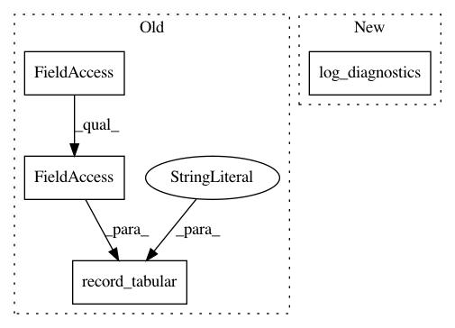

4dd96193aaa69485ef183778f053fcfcbef457a2,sac/algos/base.py,RLAlgorithm,_train,#RLAlgorithm#Any#Any#Any#,72
Before Change
logger.record_tabular("episodes", n_episodes)
logger.record_tabular("max-path-return", max_path_return)
logger.record_tabular("last-path-return", last_path_return)
logger.record_tabular("pool-size", self._pool.size)
logger.dump_tabular(with_prefix=False)
logger.pop_prefix()
After Change
logger.record_tabular("time-total", total_time)
logger.record_tabular("epoch", epoch)
self.sampler.log_diagnostics()
logger.dump_tabular(with_prefix=False)
logger.pop_prefix()
In pattern: SUPERPATTERN
Frequency: 3
Non-data size: 4
Instances
Project Name: rail-berkeley/softlearning
Commit Name: 4dd96193aaa69485ef183778f053fcfcbef457a2
Time: 2018-05-22
Author: azhou42@berkeley.edu
File Name: sac/algos/base.py
Class Name: RLAlgorithm
Method Name: _train
Project Name: rail-berkeley/softlearning
Commit Name: d66f559640be5681e03e8d6cea6cb2f1dad4ebce
Time: 2018-02-18
Author: haarnoja@berkeley.edu
File Name: softqlearning/misc/sampler.py
Class Name: SimpleSampler
Method Name: log_diagnostics
Project Name: rail-berkeley/softlearning
Commit Name: 7ea7fd92ba1f23b99c0d383501d9c31a2779f799
Time: 2018-02-24
Author: haarnoja@users.noreply.github.com
File Name: softqlearning/misc/sampler.py
Class Name: SimpleSampler
Method Name: log_diagnostics